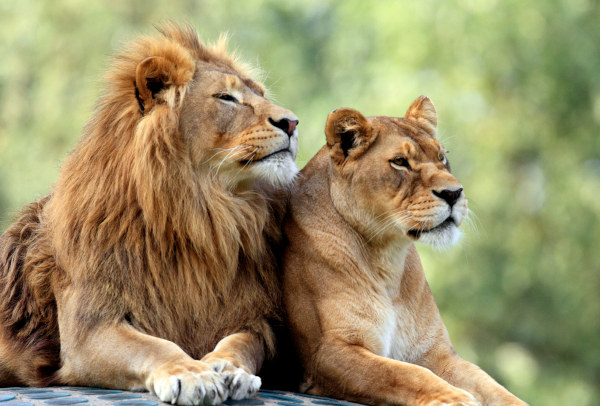

CONHEÇA ALGUNS DOS MORADORES DO ZOO SKY
CARNÍVOROS:
Os animais carnívoros são aqueles que se alimentam predominantemente da carne de outros animais.

O leão, conhecido como "rei das selvas" é um grande felino e vive em grupos, os quais apresentam uma hierarquia bastante definida. Enquanto as fêmeas caçam, os machos protegem o grupo.
O leão, conhecido como "rei das selvas" é um grande felino e vive em grupos, os quais apresentam uma hierarquia bastante definida. Enquanto as fêmeas caçam, os machos protegem o grupo.
Características:
Eles medem em média dois metros de comprimento e atingem o peso de 270 quilos, sendo considerados o segundo maior felino do mundo, perdendo apenas para o tigre. Possuem pelo curto de cor amarelo-acastanhado e uma cauda longa que apresenta em sua extremidade uma pequena quantidade de pelos pretos.
Esses animais são capazes de correr rapidamente, atingindo cerca de 80 km/h. Quando pegam sua presa, atacam principalmente o pescoço do animal, sufocando-o. Possuem mandíbulas fortes e dentes caninos com cerca de 6 cm.
O macho e a fêmea podem ser diferenciados facilmente pela presença da juba nos machos. Além disso, os leões machos apresentam-se maiores e mais pesados que as fêmeas.

Jacaré é o nome dado a um grupo de animais vertebrados pertencente à Classe Reptilia, Ordem Crocodylia e Família Alligatoridae.
No Brasil, são encontradas seis espécies de jacarés, são elas: jacaré-paguá ou jacaré-anão (Paleosuchus palpebrosus), jacaré-açu (Melanosuchus niger), jacaré-do-papo-amarelo (Caiman latirostris), jacaré-do-pantanal (Caiman yacare), jacaretinga (Caiman crocodilus) e jacaré-coroa (Paleosuchus trigonatus).
Os jacarés, assim como os demais répteis, apresentam algumas características que permitiram com que esses animais conquistassem definitivamente o ambiente terrestre, como uma pele resistente à perda de água e ovos com uma casca resistente e presença de uma câmara cheia de líquido que protege o embrião contra a dessecação.
HERBÍVOROS
Herbívoro é um animal anatomicamente e fisiologicamente adaptado para comer material vegetal, por exemplo, folhagem, como o principal componente de sua dieta.

As girafas são mamíferos nativos do continente africano.
Algumas das características mais marcantes desses animais é a sua altura, possuindo um tamanho de cerca de 5,7 m de altura, e os machos são maiores que as fêmeas. O peso desses mamíferos varia entre 1180 kg e 1930 kg. e o seu padrão de coloração, com manchas marrons características.
São animais herbívoros (só se alimentam de vegetais) que apresentam como um de seus alimentos preferidos as plantas conhecidas como acácias. Geralmente as fêmeas dão à luz um único filhote."